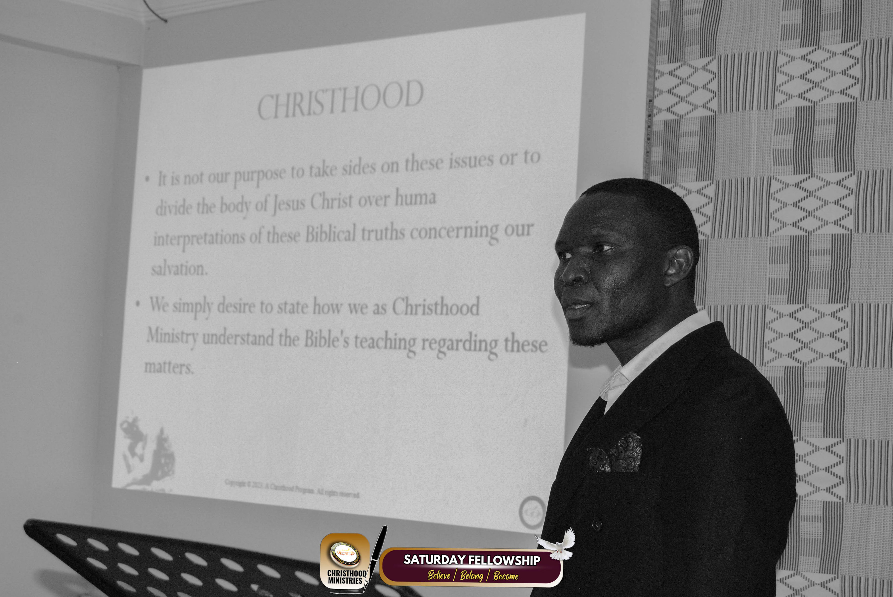

Mission Statement: The GeMM (Gospel to the Modern Mind) is a divine initiative ordained by God to equip His people for proclaiming the Gospel of Jesus Christ in the 21st century. We exist to raise up ministers and believers who are unwavering in devotion to Christ, unshakable in sound doctrine, and unstoppable in fulfilling the Great Commission.
Vision: Our vision is to cultivate believers who reflect Christ in character, proclaim Him with boldness, and embody His love in service. Through doctrinal foundations, Spirit-empowered ministry, and Christ-centered cultural engagement, we prepare ambassadors for Christ who can effectively engage the modern mind with eternal truth.
Deeply rooted in Scripture with Christ as the center of every doctrine - His person, the cross, resurrection, return, and the Church as His body.
Reliance on the Holy Spirit for anointed preaching, prayer-filled evangelism, discipleship, and healing ministry with Christ's authority.
Presenting Christ as "the way, the truth, and the life" through apologetics, cultural engagement, and gracious truth-speaking.
Cultivating daily communion with Christ, walking in the Spirit, developing Christlike character, and embracing the cost of discipleship.
Addressing modern issues of identity, morality, and purpose with the transformative truth of Jesus Christ.
The GeMM program is a sacred journey of transformation, empowerment, and obedience to Christ. With sound doctrine, Spirit-led training, and a heart for the lost, participants will emerge as ambassadors of Christ, prepared to shine His light in a dark world. If you feel the burning in your heart to make Christ known, The GeMM program is your divine invitation to rise to the call and join the mission to make His name known to every tribe, tongue, and nation.